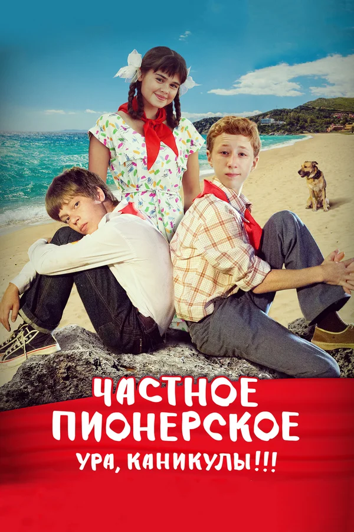

Частное пионерское. Ура, каникулы!!!

7.4
Обзор
Мишка и его верный друг Димка – школьники. Они готовятся к
празднованию дня рождения пионерской организации. На рыбалке Мишка
падает в реку, но его спасает бездомная собака, с которой ребята очень
подружились... Неожиданно собака попадает к скорняку, и только помощь
друзей может избавить её от неминуемой гибели. Перед Мишкой и Димкой
встает непростой выбор - участие в пионерском празднике или спасение
собаки ... Долг, дружба, любовь... Что важнее?.